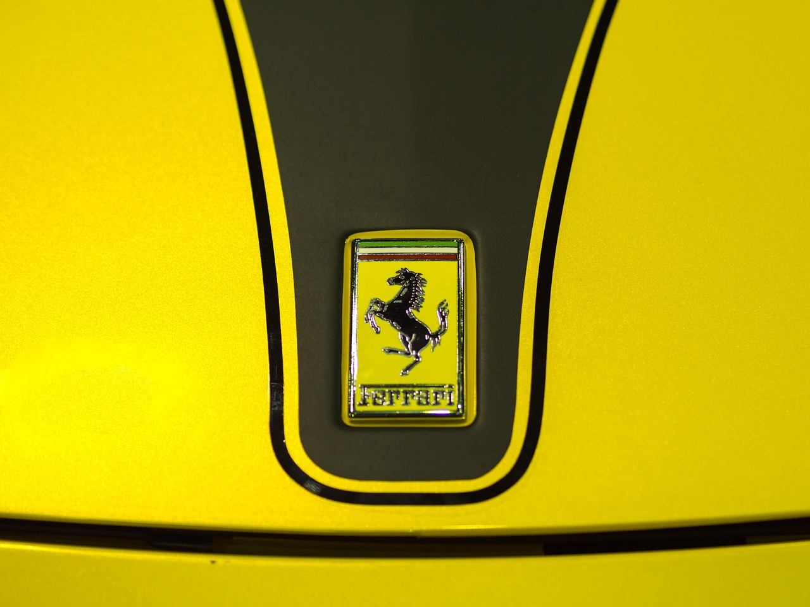
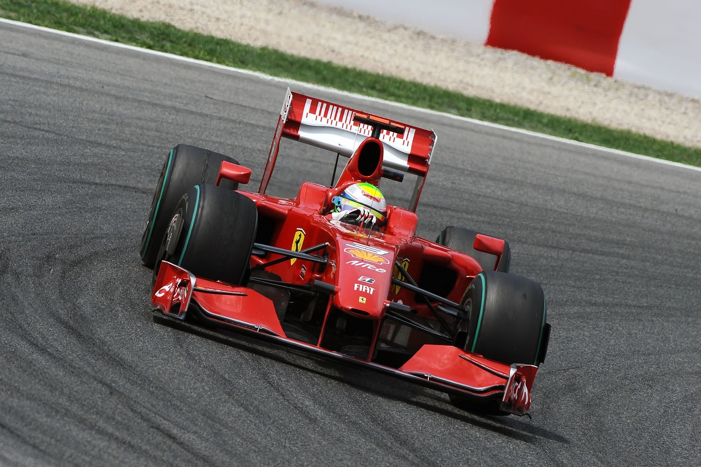

Ferrari
Ferrari S.p.A. (/fəˈrɑːri/; Italian: [ferˈraːri]) is an Italian luxury sports car manufacturer based in Maranello. Founded in 1939 by Enzo Ferrari (1898–1988), the company built its first car in 1940, adopted its current name in 1945, and began to produce its current line of road cars in 1947. Ferrari became a public company in 1960, and from 1963 to 2014 it was a subsidiary of Fiat S.p.A. It was spun off from Fiat's successor entity, Fiat Chrysler Automobiles, in 2016. The company currently offers a large model range which includes several supercars, grand tourers, and one SUV. Many early Ferraris, dating to the 1950s and 1960s, count among the most expensive cars ever sold at auction. Throughout its history, the company has been noted for its continued participation in racing, especially in Formula One, where its team, Scuderia Ferrari, is the series' single oldest and most successful. Scuderia Ferrari has raced since 1929, first in Grand Prix events and later in Formula One, where it holds many records. Historically, Ferrari was also highly active in sports car racing, where its cars took many wins in races such as the Mille Miglia, Targa Florio and 24 Hours of Le Mans, as well as several overall victories in the World Sportscar Championship. Scuderia Ferrari fans, commonly called tifosi, are known for their passion and loyalty to the team.
Ferrari
In 1945, Ferrari adopted its current name. Work started promptly on a new V12 engine that would power the 125 S, which was the marque's first car, and many subsequent Ferraris. The company saw success in motorsport almost as soon as it began racing: the 125 S won many races in 1947,[13][14] and several early victories, including the 1949 24 Hours of Le Mans and 1951 Carrera Panamericana, helped build Ferrari's reputation as a high-quality automaker.[15][16] Ferrari won several more races in the coming years,[17][18] and early in the 1950s its road cars were already a favourite of the international elite.[19] Ferrari produced many families of interrelated cars, including the America, Monza, and 250 series, and the company's first series-produced car was the 250 GT Coupé, beginning in 1958.[20] In 1960, Ferrari was reorganized as a public company. It soon began searching for a business partner to handle its manufacturing operations: it first approached Ford in 1963, though negotiations fell through; later talks with Fiat, who bought 50% of Ferrari's shares in 1969, were more successful.[21][22] In the second half of the decade, Ferrari also produced two cars that upended its more traditional models: the 1967 Dino 206 GT, which was its first mass-produced mid-engined road car,[a] and the 1968 365 GTB/4, which possessed streamlined styling that modernised Ferrari's design language.[25][26] The Dino in particular was a decisive movement away from the company's conservative engineering approach, where every road-going Ferrari featured a V12 engine placed in the front of the car, and it presaged Ferrari's full embrace of mid-engine architecture, as well as V6 and V8 engines, in the 1970s and 1980s.[25]0